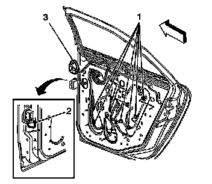

Rear Side Door Wiring Harness Replacement
Rear Side Door Wiring Harness Replacement
Removal Procedure
1. Remove the door trim panel. Refer to Rear Side Door Trim Panel Replacement (Service and Repair) .
2. Remove the water deflector. Refer to Rear Side Door Water Deflector Replacement (Service and Repair) .
3. Disconnect the power window motor electrical connector.
4. Disconnect the door latch electrical connector.

5. Remove the door wire harness connector from the pillar by inserting a small flat bladed tool between the connector and the pillar and depress the retaining tabs on the connector.
6. Disconnect the door wire harness from the body wire harness.
7. Push the wire harness grommet (2) and connector into the door cavity.
8. Push the grommet (3) into the door cavity.
9. Disconnect the rosebud retainers (1) securing the wire harness to the door.
10. Remove the wire harness from the door.
Installation Procedure
1. Insert the door wire harness into the door cavity.
2. Feed the wire harness and grommet (3) through the opening in the door.
3. Install the grommet (3) to the door.
4. Connect the rosebud retainers (1) to secure the wire harness to the door.
5. Connect the door latch electrical connector.
6. Connect the power window motor electrical connector.
7. Feed the door wire harness connector through the opening in the front of the door.
8. Install the grommet (2) to the door.
9. Connect the door wire harness connector to the body wire harness connector.
10. Install the door wire harness connector to the hinge pillar.
11. Install the water deflector. Refer to Rear Side Door Water Deflector Replacement (Service and Repair) .
12. Install the door trim panel. Refer to Rear Side Door Trim Panel Replacement (Service and Repair) .